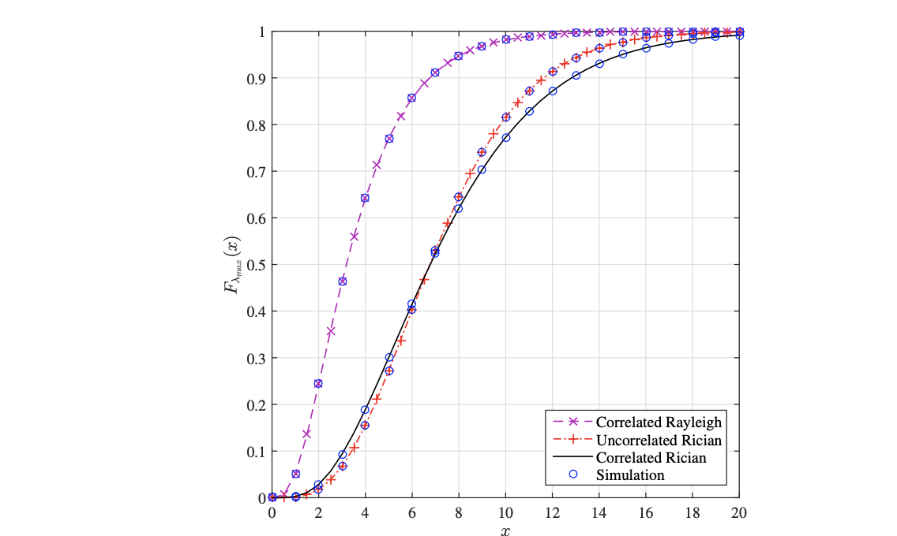
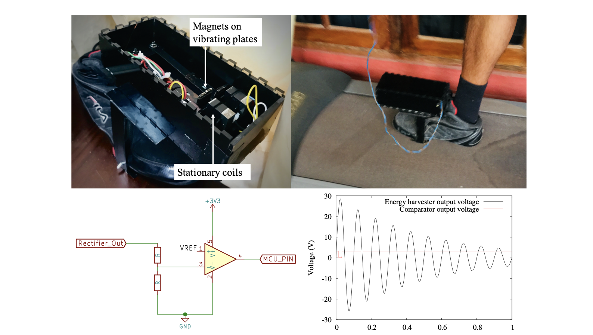
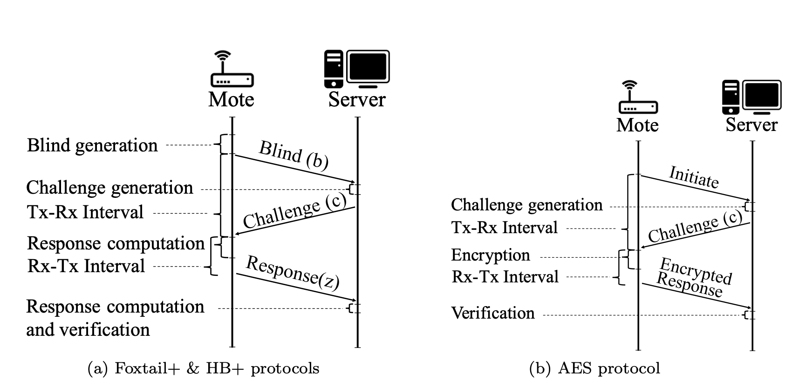

About
I am a second year PhD student in Computer Science at the Stony Brook University and a member of
CVLab,
co-advised by Prof. Michael Ryoo and
Prof. Dimitris Samaras.
My broad research interests lie in computer vision and machine learning. Currently, I am exploring
better representations for video understanding and video synthesis.
Prior to this, I worked as a Research Assistant at University of Moratuwa, Sri Lanka, under the supervision
of Dr. Ranga Rodrigo. I completed my B.Sc. in 2018 specializing in Electronic & Telecommunication Engineering
at University of Moratuwa, advised by Prof. Dileeka Dias and
Dr. Prathapasinghe Dharmawansa.
Recent News
| [Aug 2020] | Our paper titled Exploiting the Redundancy in Convolutional Filters for Parameter Reduction was accepted at WACV 2021. |
| [Jun 2020] | Our paper titled Feature-dependent Cross-Connections in Multi-Path Neural Networks was accepted at ICPR 2020. |
| [May 2020] | Our paper titled On the Exact Outage Probability of 2x2 MIMO-MRC in Correlated Rician Fading was presented at IEEE Wireless Communications and Networking Conference (WCNC) 2020 held virtually. |
| [Sep 2019] | Our paper titled Context-Aware Automatic Occlusion Removal was presented at ICIP 2019 held in Taipei, Taiwan. |
| [Feb 2019] | I was offered admission to the PhD program in Computer Science at Stony Brook University. |
| [Oct 2018] | Our paper titled Low-power Step Counting Paired with Electromagnetic Energy Harvesting for Wearables was presented at ACM International Symposium on Wearable Computers (ISWC) 2018 held in Singapore. |
| [Oct 2018] | I was awarded the Gold Medal for the best overall performance in Electronic & Telecommunication Engineering at the 39th General Convocation of University of Moratuwa. |
| [Jan 2018] | I Completed my B.Sc. at the Department of Electronic & Telecommunication Engineering, University of Moratuwa. |
Publications


Low-power Step Counting Paired with Electromagnetic Energy Harvesting for Wearables
ISWC 2018

Foxtail+: A Learning with Errors-based Authentication Protocol for Resource-Constrained Devices
IACR Cryptol. ePrint Arch.
Teaching
CSE327: Computer Vision - TA (Spring 2020)CSE215: Foundations of Computer Science - TA (Fall 2019)